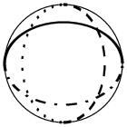
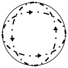

(Cubic Crystal System Only)
Return link to the symbol table

For space groups associated with the point groups -43m and m-3m in the cubic crystal system there are planes inclined at 45° to the XY plane of the screen. These are shown using the symbols shown above. The thin outer ring simply indicates the XY plane. The thick solid line shows a mirror plane bisecting the YZ axes, i.e. with its normal parallel to -YZ. The dashed line shows a glide plane bisecting the XZ axes, i.e. with its normal parallel to -XZ with the glide direction along Y. This is to be contrasted to the dotted line which bisects the -XZ axes and has the glide direction along -XZ. Finally, the dashed-dotted line (which bisects the -YZ axes) indicates a glide direction simultaneously along X and -YZ. In centred space groups, the presence of a dashed and double-dotted line indicates superimposed glide planes with a glide either along one of the axes or along the bisecting direction normal to that axis.

The cubic space groups I-43d and Ia-3d have diagonal d-glide planes in which the translation is both 1/4 along an axis direction and 1/4 along the face-diagonal direction, e.g. 1/4+x,1/4+z,1/4+y. These are illustrated, as shown above, by a dashed-dotted line with an arrow to show the sense of the translation. The presence of this type of d-glide plane automatically implies a body-centred lattice.